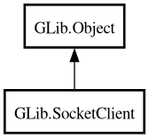

SocketClient
Object Hierarchy:

Description:
[
CCode ( type_id =
"g_socket_client_get_type ()" ) ]
[
Version ( since =
"2.22" ) ]
public class SocketClient :
Object
Content:
Properties:
Creation methods:
Methods:
- public void add_application_proxy (string protocol)
- public SocketConnection connect (SocketConnectable connectable, Cancellable? cancellable = null) throws Error
- public async SocketConnection connect_async (SocketConnectable connectable, Cancellable? cancellable = null) throws Error
- public SocketConnection connect_to_host (string host_and_port, uint16 default_port, Cancellable? cancellable = null) throws Error
- public async SocketConnection connect_to_host_async (string host_and_port, uint16 default_port, Cancellable? cancellable = null) throws Error
- public SocketConnection connect_to_service (string domain, string service, Cancellable? cancellable = null) throws Error
- public async SocketConnection connect_to_service_async (string domain, string service, Cancellable? cancellable = null) throws Error
- public SocketConnection connect_to_uri (string uri, uint16 default_port, Cancellable? cancellable = null) throws Error
- public async SocketConnection connect_to_uri_async (string uri, uint16 default_port, Cancellable? cancellable = null) throws Error
- public bool get_enable_proxy ()
- public SocketFamily get_family ()
- public unowned SocketAddress? get_local_address ()
- public SocketProtocol get_protocol ()
- public unowned ProxyResolver get_proxy_resolver ()
- public SocketType get_socket_type ()
- public uint get_timeout ()
- public bool get_tls ()
- public TlsCertificateFlags get_tls_validation_flags ()
- public void set_enable_proxy (bool enable)
- public void set_family (SocketFamily family)
- public void set_local_address (SocketAddress? address)
- public void set_protocol (SocketProtocol protocol)
- public void set_proxy_resolver (ProxyResolver? proxy_resolver)
- public void set_socket_type (SocketType type)
- public void set_timeout (uint timeout)
- public void set_tls (bool tls)
- public void set_tls_validation_flags (TlsCertificateFlags flags)
Signals:
Inherited Members:
All known members inherited from class GLib.Object